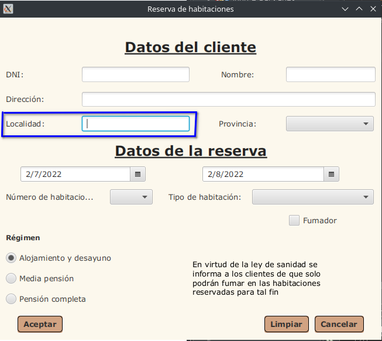
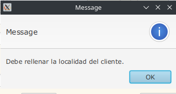
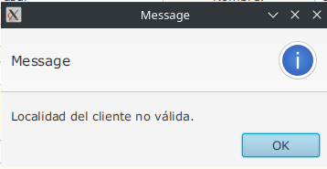

Campo Localidad

Funcionamiento del Campo Localidad:
El Campo Localidad indica el pueblo o ciudad en el que vive el cliente que quiere realizar la reserva en el hotel.
Tooltip del Campo Localidad:
Cuando se coloca el puntero del ratón sobre el Campo Localidad, aparece un mensaje que pone “Introduce Localidad”.
El Campo Localidad no admite:
- Valores que no sean Alfabéticos.
- Dejarlo vacío.
Mensajes de Error del Campo Localidad:
Si está vacío:

Si contiene números:
